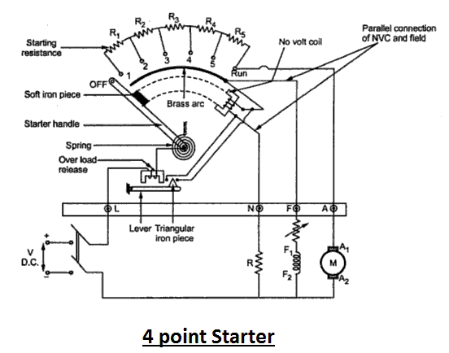

Working Principle of Four Point Starter
The 4 point starter like in the case of a 3 point starter also acts as a protective device that helps in safeguarding the armature of the shunt or compound excited dc motor against the high starting electric current produced in the absence of back emf at starting.
The 4 point starter has a lot of constructional and functional similarity to a three point starter, but this special device has an additional point and a coil in its construction, which naturally brings about some difference in its functionality, though the basic operational characteristic remains the same.
Now to go into the details of operation of 4 point starter, lets have a look at its constructional diagram, and figure out its point of difference with a 3 point starter.
Construction and Operation of Four Point Starter
A 4 point starter as the name suggests has 4 main operational points, namely
1. 'L' Line terminal. (Connected to positive of supply.)
2. 'A' Armature terminal. (Connected to the armature winding.)
3. 'F' Field terminal. (Connected to the field winding.)
Like in the case of the 3 point starter, and in addition to it there is,
4. A 4th point N. (Connected to the No Voltage Coil)
The remarkable difference in case of a 4 point starter is that the No Voltage Coil is connected independently across the supply through the fourth terminal called 'N' in addition to the 'L', 'F' and 'A'. As a direct consequence of that, any change in the field supply electric current does not bring about any difference in the performance of the NVC. Thus it must be ensured that no voltage coil always produce a force which is strong enough to hold the handle in its 'RUN' position, against force of the spring, under all the operational conditions. Such a electric current is adjusted through No Voltage Coil with the help of fixed resistance R connected in series with the NVC using fourth point 'N' as shown in the figure above.
Apart from this above mentioned fact, the 4 point and 3 point starters are similar in all other ways like possessing is a variable resistance, integrated into number of sections as shown in the figure above. The contact points of these sections are called studs and are shown separately as OFF, 1, 2, 3, 4, 5, RUN, over which the handle is free to be maneuvered manually to regulate the starting electric current with gathering speed.

Now to understand its way of operating lets have a closer look at the diagram given above. Considering that supply is given and the handle is taken stud No.1, then the circuit is complete and line electric current that starts flowing through the starter. In this situation we can see that the electric current will be divided into 3 parts, flowing through 3 different points.
i) 1 part flows through the starting resistance (R1+ R2+ R3…..) and then to the armature.
ii) A 2nd part flowing through the field winding F.
iii) And a 3rd part flowing through the no voltage coil in series with the protective resistance R.
So the point to be noted here is that with this particular arrangement any change in the shunt field circuit does not bring about any change in the no voltage coil as the two circuits are independent of each other. This essentially means that the electromagnet pull subjected upon the soft iron bar of the handle by the no voltage coil at all points of time should be high enough to keep the handle at its RUN position, or rather prevent the spring force from restoring the handle at its original OFF position, irrespective of how the field rheostat is adjusted.
This marks the operational difference between a 4 point starter and a 3 point starter. As otherwise both are almost similar and are used for limiting the starting electric current to a shunt wound DC motor or compound wound DC motor, and thus act as a protective device.
 by
by